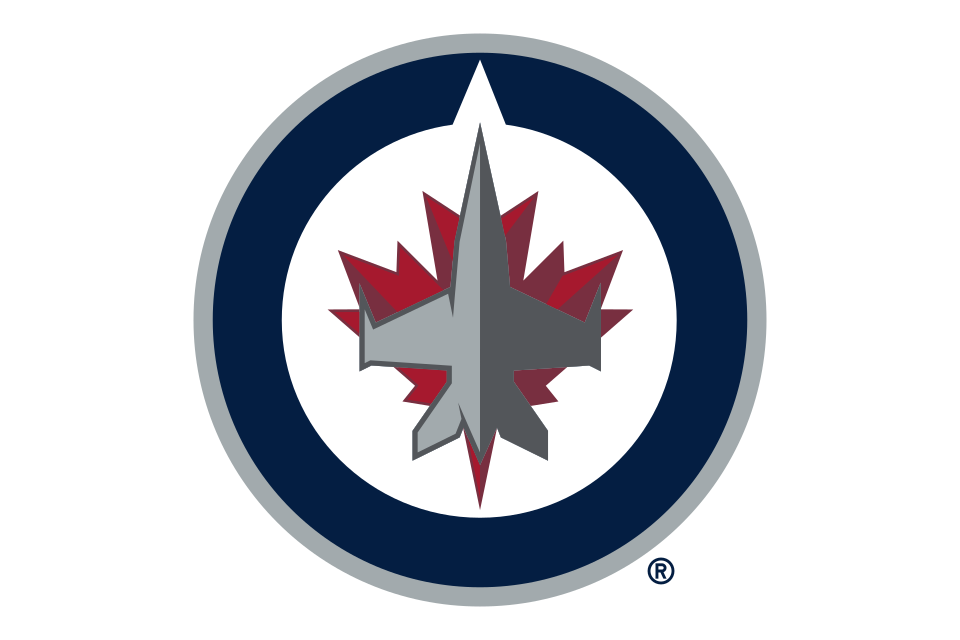
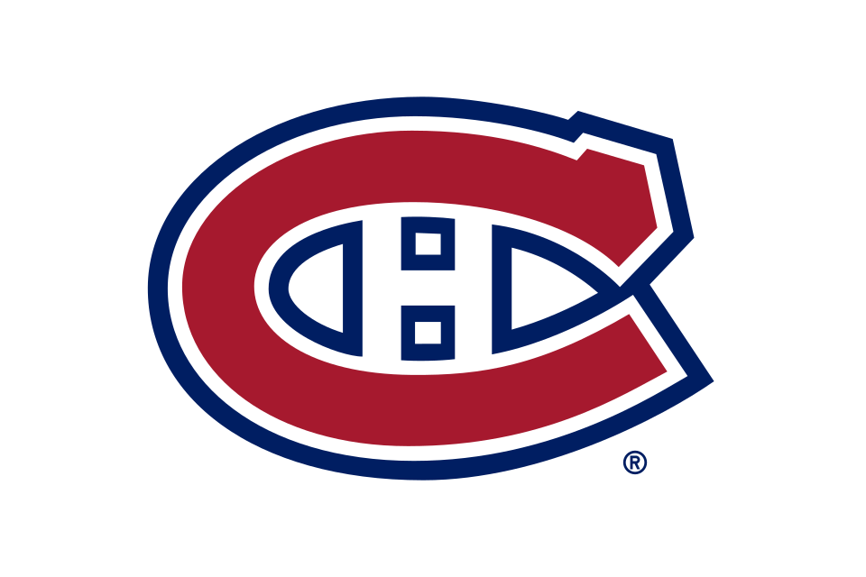

NHL history / The clock was running out
The latest four-goal comebacks in NHL history.
Montreal led 4–0 with less than three minutes left. Winnipeg tied it, then won in overtime. How does that compare with every other late four-goal rally?

WPG at MTL
2:39
remaining when the rally began
0–4 to 4–4
November 3, 2026 · Jets win 5–4 in OT
Winnipeg ranks first, even when ties and losses count. Its rally started 3 minutes, 38 seconds later than the next qualifying comeback. Looking only at wins would miss two of the five games below.
01 / The all-time ranking
Four goals down, with the least time left
“Rally began” means the clock on the goal that cut the deficit from four to three. The team must then have tied the game before regulation ended. A larger deficit earlier in the game still counts.
Scores put the comeback team first. On a small screen, scroll the table sideways to see every column.
| Rank | Comeback team / opponent | Rally began time left | Deficit erased | Tied with time left | Final result |
|---|---|---|---|---|---|
| 01 | Winnipeg Jets [1]at Montreal Canadiens | 2:39 | 0–4 → 4–4 | 0:33 | Won 5–4Overtime |
| 02 | Calgary Flames [2]at Quebec Nordiques | 6:17 | 4–8 → 8–8 | 0:11 | Tied 8–8After overtime |
| 03 | Los Angeles Kings [3]vs. Dallas Stars | 7:14 | 0–4 → 4–4 | 4:01 | Won 6–5Overtime |
| 04 | Buffalo Sabres [4]at Pittsburgh Penguins | 8:35 | 2–6 → 6–6 | 4:55 | Won 7–6Regulation |
| 05 | New Jersey Devils [5]vs. Philadelphia Flyers | 9:07 | 1–5 → 5–5 | 2:53 | Tied 5–5After overtime |
Shorter bars mean less time remaining. All bars use the same 10-minute scale. Playoff games were included in the search; all five leaders happened in the regular season.
02 / The game that reset the record
Four goals in 2:06
Winnipeg was still scoreless when Tyrel Bauer began the rally. Morgan Barron followed, then Kyle Connor scored twice to make it 4–4. These are the times remaining in the third period; scores are Winnipeg–Montreal.
- 2:39Tyrel Bauer1–4
- 1:57Morgan Barron2–4
- 1:00Kyle Connor3–4
- 0:33Kyle Connor4–4
Overtime Dylan Samberg scores at 3:30. Winnipeg wins 5–4. [1]
The distinction between latest and fastest matters: 2:39 is how much regulation time remained when the rally started; 2:06 is the time between Winnipeg’s first and fourth goals. This ranking measures how late a team was still four goals behind.
Winnipeg began 3:38 later than Calgary’s 1989 rally, and 4:35 later than the previous winning comeback, Los Angeles against Dallas in 2007. The NHL’s widely reported record concerns comeback wins. Counting ties still leaves Winnipeg on top.
03 / Scope and method
An all-time search, with ties included
This ranking covers NHL regular-season and playoff games from 1917–18 through November 3, 2026. Preseason and exhibition games are excluded. Winning is not required: a team qualifies as soon as it erases the deficit during regulation, even if it later loses.
- Find every possible late rally. Screen the NHL’s historical period-scoring records for teams with at least four third-period goals and a score that could have placed them four goals behind during that period.
- Reconstruct the score. Check each goal in order. Record the latest goal that reduces a four-goal deficit to three, then confirm that the same team subsequently ties before regulation ends.
- Rank by the clock. Convert that goal’s elapsed time into regulation time remaining, and sort from least to most. Count each team once per game.
The screen produced 322 candidate team-game sequences. All were checked, with scoring sequences reconciled to the NHL’s period totals. Historical season coverage and period-goal totals also reconciled. The resulting top five all began inside the final ten minutes, so earlier-period rallies cannot displace them.
This is Deep Hockey’s calculation from available NHL scoring records, including historical scoring summaries beyond our locally indexed play-by-play. It is a dated snapshot, not a live leaderboard.
04 / Check the records
Sources and scoring summaries
The NHL scoring records provide the goal times used in the calculations. Box scores and reporting provide additional context.
- Winnipeg at Montreal · November 3, 2026
NHL scoring record (JSON) · NHL game recap - Calgary at Quebec · October 17, 1989
NHL scoring record (JSON) · Hockey-Reference box score - Dallas at Los Angeles · November 10, 2007
NHL scoring record (JSON) · Hockey-Reference box score - Buffalo at Pittsburgh · March 10, 1976
NHL scoring record (JSON) · Sabres historical notes (PDF) - Philadelphia at New Jersey · November 6, 1986
NHL scoring record (JSON) · Hockey-Reference box score
Historical screen: NHL regular-season period-scoring data (JSON) and playoff period-scoring data (JSON). Source endpoints may update; the article’s cutoff is November 3, 2026.